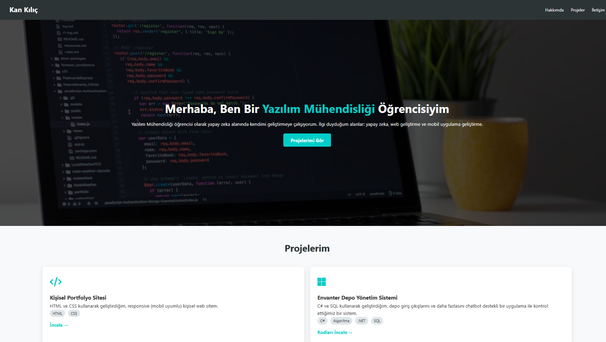

Projelerim

Kişisel Portfolyo Sitesi
HTML ve CSS kullanarak geliştirdiğim, responsive (mobil uyumlu) kişisel web sitem.
HTML
CSS
İncele →

Envanter Depo Yönetim Sistemi
C# ve SQL kullanarak geliştirdiğim, depo giriş çıkışlarını chatbot destekli kontrol ettiğimiz sistem.
C#
.NET
SQL
Kodları İncele →

Personel Puantaj Sistemi
JS ve LocalStorage ile çalışan, Excel raporu veren ve internetsiz çalışan (PWA) takip uygulaması.
JavaScript
PWA
Excel Export
Uygulamayı Dene →